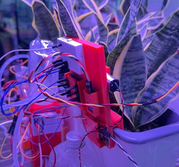
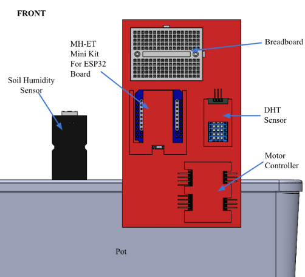
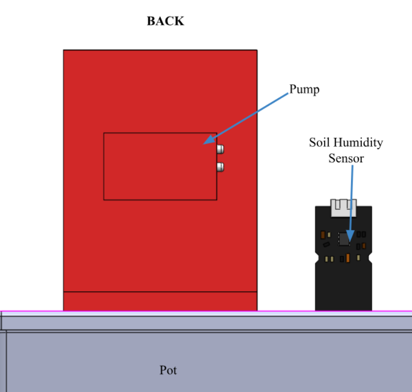

PROJECT 03
IoT Smart Watering System
A wireless, sensor-based system for automated plant watering.

Challenge
Design an IoT-based smart plant watering system which will monitor a plant's environment in real time and automatically water the plant based on sensor data.
Design Process
- Prototype: Physical part must be compact and durable, while sensors are tested on basic circuits.
- Programming: Develop code to collect sensor data and activate the watering system when thresholds are met.
- Testing: Test sensor readings, wireless communication, watering accuracy, and system reliability.
- Final Evaluation: Measure performance and compare the results with the original requirements.


Results
The system successfully monitored soil moisture levels and automatically watered the plant when needed. Even with unforseen issues, like power outage, the systems was able to recover and continue functioning as expected. The data we collected supports the effectiveness of the system in maintaining optimal soil moisture levels for plant health.
What I Learned
Briefly explain one or two engineering lessons from the project.